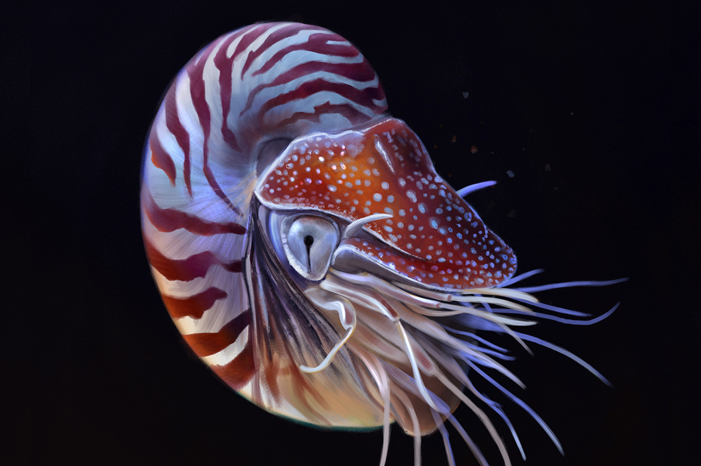
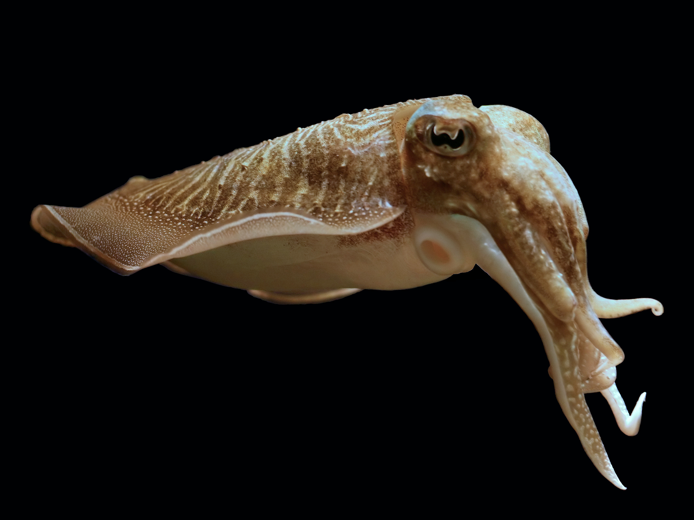

Phoning Home
Some scientists speculate that cephalopods could potentially be from alien worlds, arriving as cryopreserved eggs on comets! what do you think?
Want to call?Fins of Flavor
Despite being one of the most commonly available types of marine life, many cultures don't have much squid in their diet. The folks at Nordic food labs want to change that!
Have a bite?Dance of the DNA
Researchers recently have uncovered that octopods extensive edit their RNA sequences post DNA transcription allowing for novel and flexible protien synthesis, could this be the key to their intellect?
Got your synapses firing?

Squishy Facts
Just to be clear on what this site is about! Here's a small tidbit to help you know more about all the different types of cephalopods
Get to know us better?